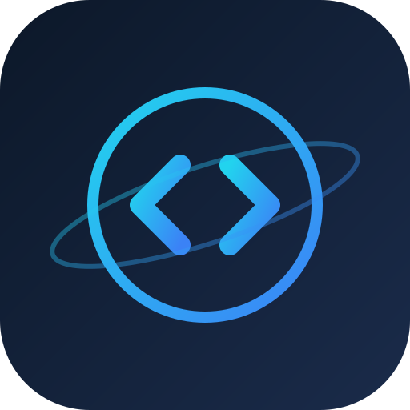
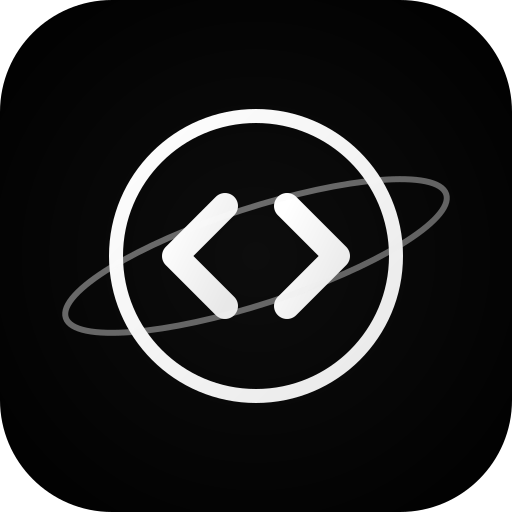

SpaceCode 图标优化
纯黑底 + 白色线条 · Cursor 风格极简预览
修改前后对比
原版 · 深蓝底 + 青蓝线

深蓝渐变背景 (#0c1829 → #1a2b4a)，青蓝渐变线条 (#22d3ee → #3b82f6)
64px
32px
16px
新版 · 纯黑底 + 白色线

纯黑背景 (#000000)，白色微渐变线条 (#FFFFFF → #E8E8E8)，Cursor 风格极简
64px
32px
16px
高级配色方案选项（点击切换当前使用方案）